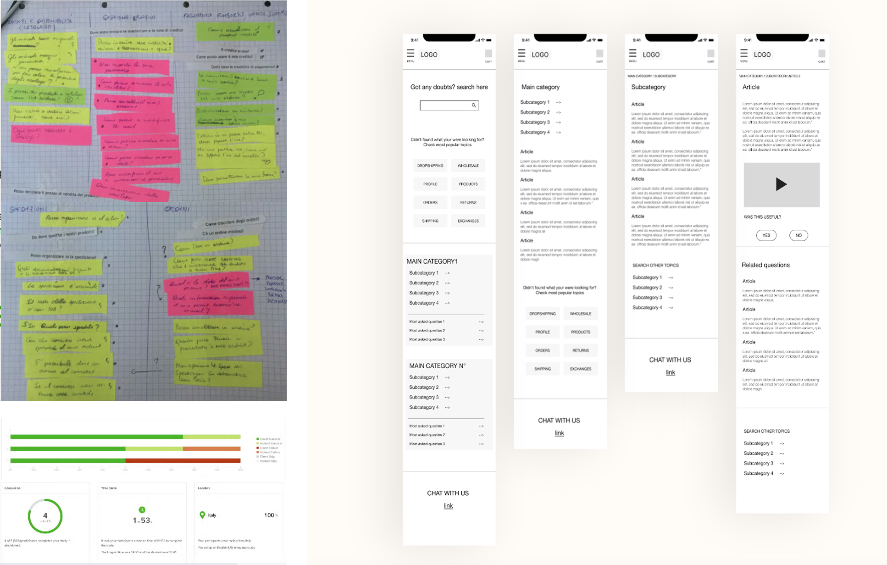

Channel strategy
Different support scenarios mapped to synchronous / asynchronous support rather than one default channel.
ARCHIVE 05 · Brandsdistribution · 2019
Reframing a struggling support experience around channel fit, self-service and information findability.
Customer complaints and poor reviews pointed to rising response / resolution times and a lack of ways for customers to find information independently. The project started as a support problem and quickly became a service-design problem.
Different support scenarios mapped to synchronous / asynchronous support rather than one default channel.
FAQ, documentation and contact routes designed as a connected support system.
Card sorting and tree testing used to organise FAQ content around user expectations.

Better resolution rates
Higher time effort
Worse resolution rates
Lower time effort
Indirect, asynchronous contact

Years before working on AI support, the same principle was already visible: the best support channel depends on the job, and findability is part of resolution.